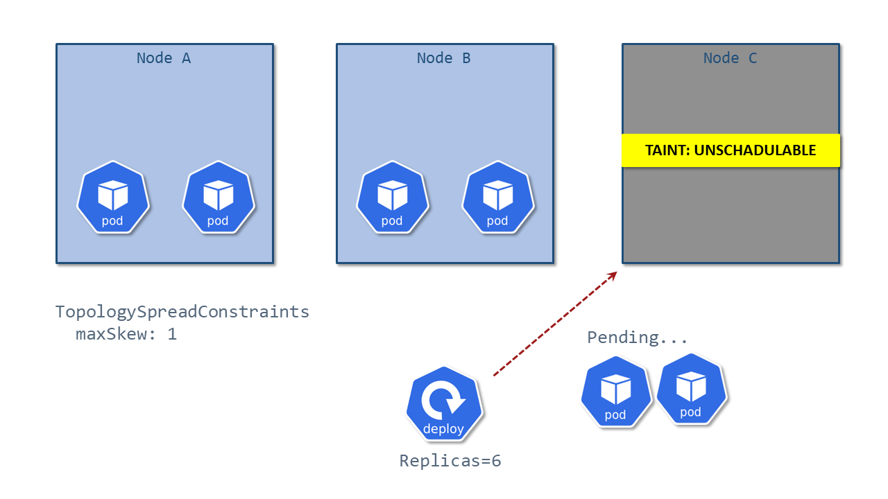
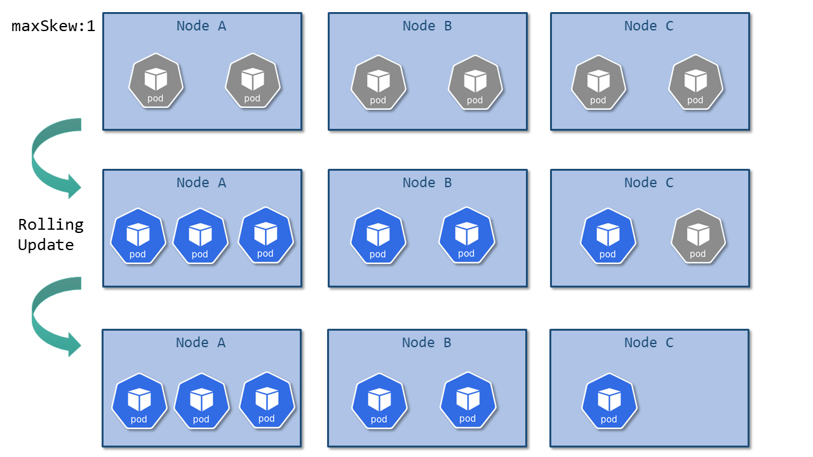

Neco Weekly (2022-08-26号)
サイボウズ Neco チームでは、 Neco Weekly という「最近気になる Cloud Native 関連のネタを共有する会」を社内で開催しています。 本記事は共有会の中で紹介したネタをまとめたものです。
今回は第5回目の記事となります。
✨ Kubernetes 1.25
今回は、Kubernetes 1.25 のリリースノートから気になったものをピックアップして紹介したいと思います。
Kubernetes 1.25 - What's new? - New features and deprecations
Kubernetes 1.25 is about to be released, and it comes packed with novelties! Where do we begin? This release brings 40 enhancements, on par with the 46 in Kubernetes 1.24 and 45 in Kubernetes 1.23. Of those 40 enhancements, 13 are graduating to Stable, 10 are existing features that keep improving, 15 are completely new, and two are deprecated features.
#127 Add support for user namespaces
User Namespace をサポートすることで、コンテナ内のユーザー/グループとホスト内のユーザー/グループが分離できるようになります。
これまではコンテナ内で root ユーザーとして実行しているプロセスは、ホスト内でも root ユーザーとして実行されていたため、脆弱性によりプロセスがコンテナから抜け出した場合にホスト上で強い権限を持ってしまうという問題がありました。 例えば Postfix は他のユーザーになりすまして動くため、root ユーザーで実行する必要がありましたが、今後はそのようなプロセスも Kubernetes 上で安全に動かすことができるようになります。
なおこの機能については、 KubeCon NA 2022 の下記のセッションでも詳しく紹介されるようです。
#5 PodSecurityPolicy + #2579 PodSecurity admission
以前から告知されていたとおり PodSecurityPolicy が廃止となり、代わりに PodSecurity admission が利用可能になっています。
なお、Neco チームでは Kubernetes 公式の PodSecurity admission を利用せず、以下の pod-security-admission を自前で実装して使っています。 （公式のものよりも先に実装していたため、名前がかぶってしまっています😅）
GitHub - cybozu-go/pod-security-admission: A Kubernetes admission webhook to ensure pod security standards
The PSP replacement has been announced. This project is just a stopgap until it is replaced. pod-security-admission is a set of Kubernetes Admission Webhooks to ensure Pod Security Standards. pod-security-admission aims to be a simple Pod Security Policy replacement. This is not a policy engine and users cannot write their own policies flexibly.
公式の PodSecurity admission は、Kubernetes 上で動作している Pod に対してもポリシーチェックをおこなうことができますが、Neco の pod-security-admission にはそのような機能はありません。 一方、公式の PodSecurity admission では Pod Security Standards 以外のプロファイルを用意することが難しいのですが、Neco の pod-security-admission では、ポリシーをカスタマイズしやすくなっています。
#3327 CPU Manager policy: socket alignment
Kubernetes 上で MySQL のような CPU intensive なワークロードを動かす場合、十分な性能を得るために CPU Pinning をおこなうことがあります。 この CPU Pinning をおこなう際に、占有するコアが NUMA ノードをまたぐか、ソケットをまたぐかによって、メモリアクセスの速度が大きく変わります。
これまでの CPU Manager では NUMA ノードをまたがないような設定はできていたのですが、今回からソケットをまたがないような設定ができるようになります。
NUMA ノードやソケットをまたいだ際のメモリアクセス速度について知りたい方は、以下の記事をぜひご覧ください。
EPYCマシンの検証(2) - NUMAノードをまたぐメモリアクセス速度 - Cybozu Inside Out | サイボウズエンジニアのブログ
技術顧問のsatです。 前回 に引き続き、EPYCマシンの検証についての話をします。手元のEPYCマシン(Super Micro AS-1023US-TR4)はNUMAアーキテクチャ(後述)を採用してます。今回はこのマシンにおけるNUMAノードをまたいだメモリアクセスに関するデータを採取しましたので、その結果をお伝えします。 ...
#2254 cgroup v2
cgroup v2 サポートが stable になりました。
なお Neco チームでは、利用している OS (Flatcar Linux) で cgroup v2 が有効化されたため、昨年時点で cgroup v2 の導入を終えています。 Kubernetes の cgroup v2 に関する情報が少なくて導入には苦労したのですが、そのときの知見をブログにまとめてあるのでよろしければご覧ください。
Five Things to Prepare for Cgroup v2 with Kubernetes - Kintone Engineering Blog
By Daichi Sakaue (@yokaze) Above all the effort of the community, Kubernetes is now ready to run with cgroup v2. We recently migrated our on-premises Kubernetes clusters to use cgroup v2 and discovered some key points to know. This blog post explains what cgroup v2 is, what it brings to Kubernetes, ...
なお、今回の cgroup v2 対応では、v1 から v2 向けのパラメータ名変更が中心となっているようです。 今後はメモリコントロールや OOM Killer の仕組みが改善されていくようなので楽しみですね。
#3094 Take taints/tolerations into consideration when calculating PodTopologySpread Skew
PodTopologySpread は、Pod を複数のドメインに分散配置するための機能です。
PodTopologySpread では、ドメイン間での Pod の偏りが maxSkew を超えないように制御するのですが、いままでは Taints が付いてたノードも Skew としてカウントされていました。 そのためワーカーノードを再起動するときなどにノードに Taints が付与され、Pod がスケジュールできなくて Pending 状態になってしまうという問題がありました。

今回から、Taints や Affinity が付与されたノードを Skew の対象外とする設定ができるようになりました。 ただし、これまで通り Taints のついたノードも含めて欲しいケースもあるので、対象外とするかしないかの設定を切り替えることができるようになっています。
#3243 Respect PodTopologySpread after rolling upgrades (to review)
これまでは、Deployment のローリングアップグレードする際に、新しい Pod 群と古い Pod 群を区別せず分散配置していました。 そのため、以下のようにアップグレード後に以下のように偏りが生じるケースがありました。

そこで、PodTopologySpread の対象を LabelSelector で指定できるようにして、pod-template-hash ラベルで分散配置するグループを分離しようというものです。
我々の環境でもアップグレード後に Pod が偏るケースがあったので、これはありがたいです。
#3022 Min domains in PodTopologySpread
PodTopologySpread の Min domains 機能がベータになりました。
これは Pod を分散配置する際に、最低限いくつ以上のドメインに分散配置する必要があるのかを設定するためのものです。 例えば、Elasticsearch のクラスタの可用性を向上させるために、3ドメインや5ドメインに分散配置させたいときなどに役立つ機能です。
この機能を開発された方のブログも公開されています。
Kubernetes へ MinDomains という機能の KEP を出して、alpha機能としてリリースされた話
こんにちは。 社会人になってやりたいことに対する自分の時間が圧倒的に足りなくなり謎の焦燥感に駆られています、sanposhihoです。 僕は、普段趣味の時間を使ってKubernetesにcontributeしています。昨年に MinDomains というPod Topology Spreadの新しい機能のKEPが承認され、alpha機能としてKubernetes ...
あとがき
現在 Neco チームではサマーインターンを実施しており、学生さんにカスタムコントローラーの開発をしてもらっています。
サマーインターンの様子は後日改めて報告したいと思います。